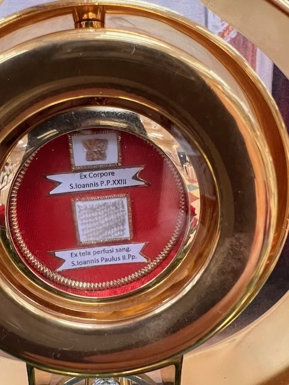

The label is in Latin
Sts. John XXIII and John Paul II, Popes
On the label
Ex CorporeS. Ioannis P.P. XXIIIEx tela perfusi sang.S. Ioannis Paulus II. Pp.
In English
From the body of St. John XXIII, Pope.From cloth soaked with the blood of St. John Paul II, Pope.
Saints named
Two windows in one theca, one for each pope.